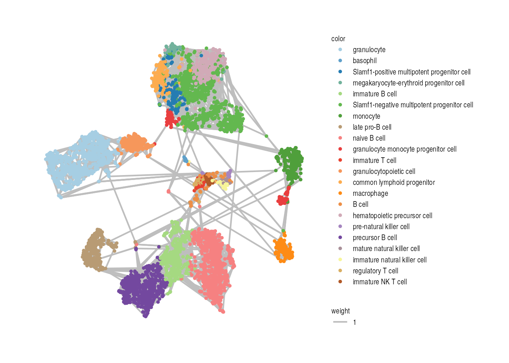
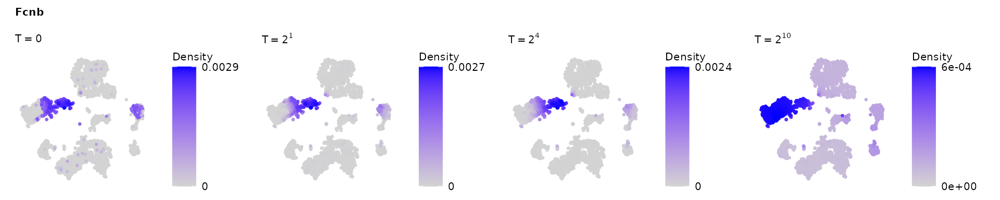
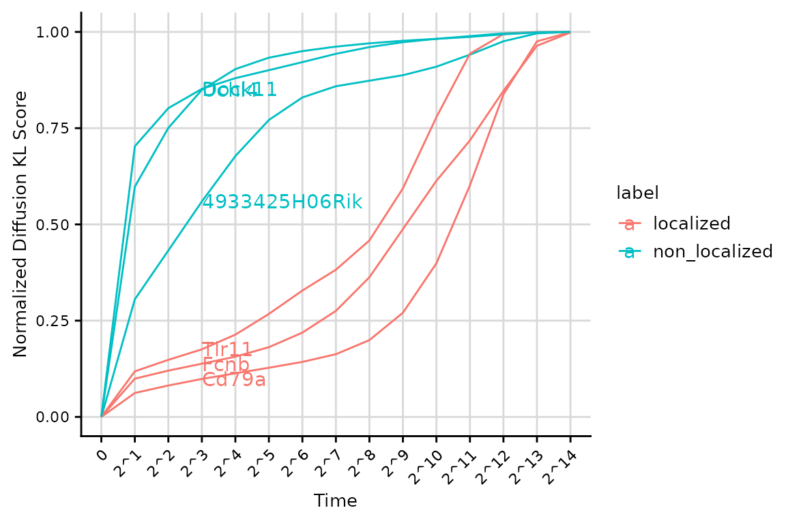
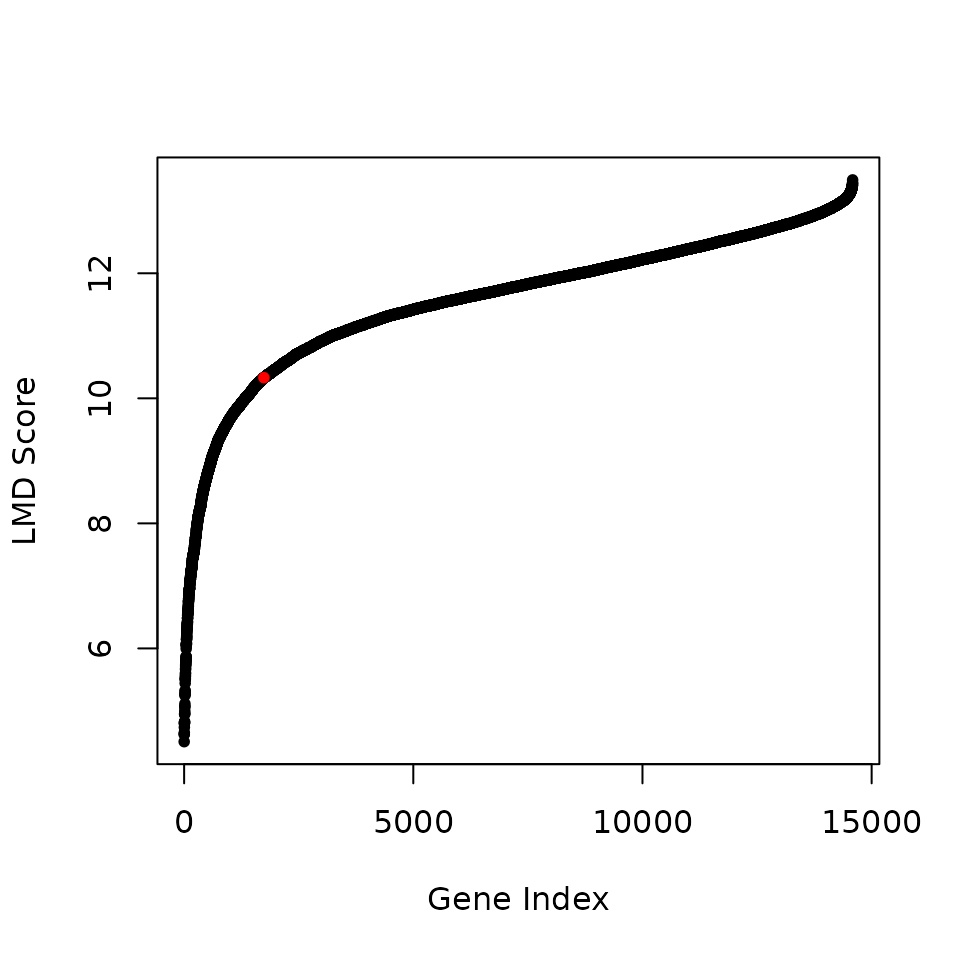

LMD Tutorial
Ruiqi Li, Francesco Strino, Rihao Qu
08/20/2024
Source:vignettes/LMD_demo.Rmd
LMD_demo.RmdOverview
Localized Marker Detector (LMD) is a computational framework designed for the identification of gene expression markers localized to specific cell populations within single-cell RNA sequencing data. The major workflow of LMD comprises the following three main steps:
- Step1. Constructing a cell-cell affinity graph
- Step2. Diffusing the gene expression value across the cell graph
- Step3. Assigning a score to each gene based on the dynamics of its diffusion process
- Optional Downstream tasks

Preparing input data
Loading example data
The preprocessed Seurat object for this tutorial can be downloaded from figshare. The preprocessing step can be refer to the Tabula Muris workflow(Consortium et al. 2018).
dir.path0 = "~/" # Specify the directory path where you want to save the data
file_name = "marrow_facs.rds" # Specify the file name for saving the data
if (!file.exists(file.path(dir.path0,file_name))) {
options(timeout=6000)
download.file("https://figshare.com/ndownloader/files/13092380", destfile = file.path(dir.path0,file_name), method = 'libcurl')
# Check and upgrade the Seurat object if needed
load(file.path(dir.path0,file_name))
tiss <- UpdateSeuratObject(tiss)
saveRDS(tiss, file = file.path(dir.path0,file_name))
}
tiss <- readRDS(file = file.path(dir.path0,file_name))Extracting input data
Next, we prepare the following objects as input data from this Seurat object.
feature_space: A matrix containing the first 20 principal components (PCs) from PCA.visual_space: A data frame containing the 2D t-SNE coordinatesdat: A matrix of log-normalized gene expression values, where rows correspond to genes and columns correspond to cells.cell_label: Metadata related to the cells, such as cell type annotations, for visualization.
DefaultAssay(tiss) <- "RNA"
n_dim = dim(tiss@reductions$pca@cell.embeddings)[2]
feature_space = as.matrix(tiss@reductions$pca@cell.embeddings[,1:n_dim])
visual_space = data.frame(tiss@reductions$tsne@cell.embeddings)
dat = as.matrix(tiss[[DefaultAssay(tiss)]]@data)
cell_label = tiss$cell_ontology_classRunning LMD Step by Step
This provides a step-by-step tutorial for a better understanding of LMD. To directly obtain the output of LMD, skip to Running LMD in One Step.
Step1: Constructing a cell-cell affinity graph
We construct the cell-cell kNN graph (K= 5 in this
example) using ConstructKnnGraph.
# Construct knn graph
knn_result = ConstructKnnGraph(knn = 5, feature_space = feature_space)
#> Constructing KNN graph
A = knn_result$adj_matrix # Adjacency Matrix
W = knn_result$graph # Symmetrized Graph ((A + AT) / 2)
# Plot knn graph
VisualizeGraph(affinity_m = W, label = cell_label, layout = visual_space) +
guides(color = guide_legend(ncol = 1, byrow = TRUE)) +
theme(
legend.title = element_text(size = rel(0.7)),
legend.text = element_text(size = rel(0.7)),
legend.key.height = unit(1, "null"))
Step2: Diffusing the gene expression value across the cell graph
Next, we set the initial state of each gene by normalizing the
expression matrix using RowwiseNormalize. We then construct
a list of diffusion operators at different time scales using
ConstructDiffusionOperators. By multiplying the initial
state with the corresponding diffusion operators, we obtain the diffused
state of each gene at the dyadic time scales
.
Finally, we can visualize the diffused state of each gene on the cell
embedding.
# Construct a list of diffusion operators
P_ls = ConstructDiffusionOperators(W = W, max_time = 2^20)
#> Create a list of diffusion operators...
#> | | | 0% | |======= | 10% | |===================== | 30% | |============================ | 40% | |=================================== | 50% | |========================================== | 60% | |================================================= | 70% | |======================================================== | 80% | |=============================================================== | 90% | |======================================================================| 100%
#> Converting diffusion operators to sparse matrices...
#>
#> Max diffusion time: 16384
# Generate initial state for each gene
rho = RowwiseNormalize(dat[,colnames(W)])Here we visualize the diffused state of Fcnb - a marker for granulocytopoietic cells, at four different time points: and .
gene = "Fcnb"
VisualizeDiffusion(coord = visual_space,init_state = rho[gene,],P_ls = P_ls,check_time = c(0,2,2^4,2^10),gene_name = gene) &
theme(
plot.title = element_text(size = rel(0.7)),
plot.subtitle = element_text(size = rel(0.7)),
legend.title = element_text(size = rel(0.7)),
legend.text = element_text(size = rel(0.7)) )
Step3: Obtain Diffusion KL score & LMD score
We measure the dynamics of the diffusion process for each gene using a score profile. This profile is calculated by the Kullback–Leibler (KL) divergence between the initial state and the diffused state, and then normalizing it by the KL divergence between the initial state and the equilibrium state.
We summarize this score profile into the LMD score, which is the
cumulative sum of the score profile at all dyadic time steps. This LMD
score can be used to rank the genes. Both the score profile and the LMD
score are calculated using fast_get_lmds.
score_result = fast_get_lmds(W = W, init_state = rho, P_ls = P_ls, largeData = FALSE)Now, we visualize three sets of genes expressing in different number of cells:
Expressed in approximately cells: Tlr11, 4933425H06Rik
Expressed in approximately cells: Fcnb, Uchl4
Expressed in approximately cells: Cd79a, Dock11
genes = c("Tlr11","Fcnb","Cd79a","4933425H06Rik","Uchl4","Dock11")
FeaturePlot(tiss, features = genes, ncol = 3, order = TRUE) & NoAxes() & theme(plot.title = element_text(size = rel(0.5)), legend.text = element_text(size = rel(0.5)))We visualize the score profiles for genes above. Genes with more localized patterns (Tlr11, Fcnb, Cd79a) tend to have smaller LMD scores (area under the curve) regardless of the number of cells in which they are expressed.
genes_label = rep(c("localized","non_localized"),each = 3)
VisualizeScorePattern(score_result$'score_profile', genes = genes, label_class = genes_label, facet_class = NULL, text = TRUE, normalize = TRUE) & theme(
plot.title = element_text(size = rel(0.7)),
plot.subtitle = element_text(size = rel(0.7)),
axis.title.x = element_text(size = rel(0.7)), axis.title.y = element_text(size = rel(0.7)),
axis.text.x = element_text(size = rel(0.7)), axis.text.y = element_text(size = rel(0.7)),
legend.title = element_text(size = rel(0.7)),
legend.text = element_text(size = rel(0.7)) )
The results of the LMD can be presented in a table, displaying the LMD score and the rank for each gene.
res = show_result_lmd(score_result)
head(res$gene_table,10)
#> score rank
#> Mmp9 4.508234 1
#> 1100001G20Rik 4.624757 2
#> Itgb2l 4.627945 3
#> Lrg1 4.654115 4
#> C5ar1 4.737228 5
#> Retnlg 4.799311 6
#> Hp 4.799382 7
#> 1810033B17Rik 4.813253 8
#> Lcn2 4.825797 9
#> Chi3l1 4.828846 10Running LMD in one step
LMD can be run in one step. In this case, the input is:
dat: the log-normalized gene expression data, where rows correspond to genes and columns correspond to cells.feature_space: the first 20 principal components (PCs) of thedat.knn: of the cell-cell kNN graph.
This example dataset contains 5,037 cells, running LMD
should take 1 to 3 minutes to finish.
Note: The actual runtime can vary depending on your system’s matrix operation performance. To potentially reduce runtime and enhance performance, ensure that your R environment is configured with optimized BLAS/LAPACK libraries, such as OpenBLAS, which support parallel processing. For details on the specific setup used in this tutorial, please refer to Session information.
For more information on installing and configuring these libraries, visit OpenBLAS and R Administration and Installation.
# Load packages
library(LocalizedMarkerDetector)
library(tictoc)
tic()
score_result = LMD(dat, feature_space, knn = 5)
#> Constructing KNN graph
#> Remove 0 genes which express in less than 5 cells
#> Calculate LMD score profile for large data...
#> Run doubly stochastic on affinity matrix...
#>
#> max diffusion time:2^ 14
toc()
#> 92.965 sec elapsedPresent the results of LMD in a table: the LMD score and the rank for each gene.
res = show_result_lmd(score_result)
head(res$gene_table,10)
#> score rank
#> Mmp9 4.508234 1
#> 1100001G20Rik 4.624757 2
#> Itgb2l 4.627945 3
#> Lrg1 4.654115 4
#> C5ar1 4.737228 5
#> Retnlg 4.799311 6
#> Hp 4.799382 7
#> 1810033B17Rik 4.813253 8
#> Lcn2 4.825797 9
#> Chi3l1 4.828846 10Improve the computational efficiency by cell graph coarse-graining.
For large datasets, we recommend an optional cell graph coarse-graining strategy adapted from GeneTrajectory(Qu et al. 2024). to further reduce computational cost. This approach aggregates cells into a smaller number of “meta-cells” using -means clustering, and defines the expression profile of each meta-cell by summing the expression values of its constituent cells.
Below is an example of coarse-grain the cell graph by grouping cells into N=1000 “meta-cells”.
cg_output = CoarseGrain(feature_space, expression = dat, graph.affinity = W, N = 1000)
#> Run k-means clustering
#> Coarse-grain matrices
W_cg = cg_output$graph
dat_cg = cg_output$expression
tic()
score_result_cg = LMD(dat_cg, max_time = 2^20, graph.affinity = as.matrix(W_cg))
#> Remove 0 genes which express in less than 5 cells
#> Calculate LMD score profile for large data...
#> Run doubly stochastic on affinity matrix...
#>
#> max diffusion time:2^ 13
toc()
#> 9.456 sec elapsedIdentifying Gene Modules
First, we select the top localized genes based on the knee point of the LMDS distribution.
res = show_result_lmd(score_result, kneeplot = TRUE)
#> knee_point: 1741
top_lmd_genes = names(res$cut_off_gene)Next, we compute the gene-gene pairwise Jaccard distance based on
their expression levels over all cells using
CalculateGeneDistance. We recommend users to apply ALRA
imputation(Linderman et al. 2022) first to
reduce the effect of drop-out events on the gene distance
calculations.
Notes:
ALRA may produce different results with each run, leading to slight variations in the gene-gene distance and gene clustering results For reproducibility with this tutorial, users can download our preprocessed Seurat object, which includes the ALRA assay.
This step is time-consuming and may take 4 to 5 minutes to complete.
# tic()
# ALRA imputation
if(!"alra" %in% names(tiss@assays)){
tiss <- RunALRA(tiss, assay = "RNA")
DefaultAssay(tiss) <- "RNA"
}
dat_alra = as.matrix(tiss[["alra"]]@data)[top_lmd_genes,]
# Compute the gene-gene pairwise distance
dist = CalculateGeneDistance(dat_alra, method = "jaccard")
# toc()After obtaining the gene-gene distance matrix dist, we
cluster the genes using stats::hclust with
average option and determine the gene modules using
dynamicTreeCut::cutreeDynamic. Optionally, we remove
outlier genes in each module with SML algorithm(Parisi et al. 2014) and discard modules
containing fewer than 10 genes. All of these steps are performed using
ClusterGenes.
gene_cl_res = ClusterGenes(dist, clustering_method = "average", return_tree = TRUE, deepSplit = 1)
#> ..cutHeight not given, setting it to 0.976 ===> 99% of the (truncated) height range in dendro.
#> ..done.
#> Filtering out outlier genes in each module: 1684 genes left.We can visualize the pairwise distance matrix of genes. The sidebar and side tree represent the partitioning of genes into gene modules.
VisualizeGeneHeatmap(dist, gene_partition = gene_cl_res$gene_partition, gene_hree = gene_cl_res$gene_hree)Computing Per-Cell Module Activity Scores
Next, we calculate the module activity score for each module using
AddModuleActivityScore, which represents the probability of
a module being expressed in a given cell. This score can be further used
to visualize the expression patterns of each module and to identify the
corresponding cells.
Note: This step is CPU-intensive and may take 4 to 5
minutes to complete. We also suggest considering alternative methods,
such as Seurat::AddModuleScore,
to visualize the gene module on cell embedding.
gene_partition = gene_cl_res$gene_partition
levels(gene_partition) = 1:nlevels(gene_partition) # rename gene modules
tiss = AddModuleActivityScore(tiss, gene_partition = gene_partition)
# Visualize patterns
(FeaturePlot(tiss, features = colnames(tiss@meta.data)[grepl("Module",colnames(tiss@meta.data))], order = TRUE, reduction = "tsne", ncol = 5) & NoAxes() &
scale_color_gradient(low = "lightgrey", high = "blue", limits = c(0,1)) & labs(color = "ModuleScore") & theme(
plot.title = element_text(size = rel(0.5)),
legend.title = element_text(size = rel(0.5)),
legend.text = element_text(size = rel(0.5)) )) + plot_layout(guides = "collect")We can take a closer look at a module by examining several of its top localized genes.
module_id = 19
p1 = FeaturePlot(tiss, features = paste0("Module",module_id), order = TRUE, reduction = "tsne") + ggtitle(sprintf("Module%s (%d genes)",module_id,sum(gene_partition == module_id))) + labs(color = "ModuleScore") + NoAxes()
pl = FeaturePlot(tiss, features = names(gene_partition)[gene_partition == module_id][1:6],ncol = 3, order = TRUE) & NoAxes()
p = (p1 + pl + plot_layout(design = c("#BBB\nABBB\nABBB\n#BBB"))) & theme(
plot.title = element_text(size = rel(0.5)),
legend.title = element_text(size = rel(0.5)),
legend.text = element_text(size = rel(0.5)) )
pTo better understand the biological functions of these gene modules,
we can perform a series of functional enrichment analyses, such as Gene
Ontology (GO) enrichment analysis(Wu et al.
2021) or Reactome Pathway Database enrichment analysis(Yu and He 2016). Here, we demonstrate the
Reactome Pathway Database enrichment analysis using
ReactomePA::enrichPathway for previous selected gene
module, and we print its top 5 significantly enriched pathways.
library(ReactomePA)
library(org.Mm.eg.db)
bg_genes = rownames(dat) # Set all genes(after filtering) in the expression matrix as background genes
universe_df = data.frame("symbol" = bg_genes,"entrez" = mapIds(org.Mm.eg.db, keys=bg_genes, column="ENTREZID", keytype="SYMBOL"))
universe_df = universe_df[!is.na(universe_df$entrez),]
epathway_result <- enrichPathway(gene=universe_df[universe_df$symbol %in% names(gene_partition)[gene_partition == module_id],"entrez"],
organism = "mouse",
pAdjustMethod = "BH",
pvalueCutoff = 0.05,
universe = universe_df$entrez)
print(epathway_result@result[1:5,c('Description', 'GeneRatio', 'p.adjust')])
#> Description GeneRatio p.adjust
#> R-MMU-1640170 Cell Cycle 30/47 3.388436e-23
#> R-MMU-69278 Cell Cycle, Mitotic 28/47 7.167466e-23
#> R-MMU-68886 M Phase 21/47 6.462027e-17
#> R-MMU-68877 Mitotic Prometaphase 18/47 1.268621e-16
#> R-MMU-69620 Cell Cycle Checkpoints 18/47 1.228419e-15Session information
sessionInfo()
#> R version 4.1.3 (2022-03-10)
#> Platform: x86_64-pc-linux-gnu (64-bit)
#> Running under: Ubuntu 20.04.4 LTS
#>
#> Matrix products: default
#> BLAS: /usr/lib/x86_64-linux-gnu/openblas-pthread/libblas.so.3
#> LAPACK: /usr/lib/x86_64-linux-gnu/openblas-pthread/liblapack.so.3
#>
#> locale:
#> [1] LC_CTYPE=en_US.UTF-8 LC_NUMERIC=C
#> [3] LC_TIME=en_US.UTF-8 LC_COLLATE=en_US.UTF-8
#> [5] LC_MONETARY=en_US.UTF-8 LC_MESSAGES=en_US.UTF-8
#> [7] LC_PAPER=en_US.UTF-8 LC_NAME=C
#> [9] LC_ADDRESS=C LC_TELEPHONE=C
#> [11] LC_MEASUREMENT=en_US.UTF-8 LC_IDENTIFICATION=C
#>
#> attached base packages:
#> [1] stats4 stats graphics grDevices utils datasets methods
#> [8] base
#>
#> other attached packages:
#> [1] org.Mm.eg.db_3.14.0 AnnotationDbi_1.56.2
#> [3] IRanges_2.28.0 S4Vectors_0.32.4
#> [5] Biobase_2.54.0 BiocGenerics_0.40.0
#> [7] ReactomePA_1.38.0 patchwork_1.1.2
#> [9] ggplot2_3.3.6 tictoc_1.2
#> [11] SeuratWrappers_0.3.1 SeuratObject_4.1.3
#> [13] Seurat_4.3.0.1 LocalizedMarkerDetector_1.0.0
#>
#> loaded via a namespace (and not attached):
#> [1] rappdirs_0.3.3 scattermore_0.8 R.methodsS3_1.8.2
#> [4] ragg_1.3.3 tidyr_1.2.0 bit64_4.0.5
#> [7] knitr_1.49 irlba_2.3.5 R.utils_2.12.0
#> [10] data.table_1.14.2 KEGGREST_1.34.0 RCurl_1.98-1.8
#> [13] generics_0.1.3 cowplot_1.1.1 RSQLite_2.2.16
#> [16] shadowtext_0.1.2 RANN_2.6.1 future_1.27.0
#> [19] bit_4.0.4 enrichplot_1.14.2 spatstat.data_3.0-1
#> [22] httpuv_1.6.5 viridis_0.6.2 xfun_0.51
#> [25] hms_1.1.2 jquerylib_0.1.4 evaluate_1.0.3
#> [28] promises_1.2.0.1 additivityTests_1.1-4.2 fansi_1.0.3
#> [31] progress_1.2.2 igraph_1.3.4 DBI_1.1.3
#> [34] htmlwidgets_1.5.4 spatstat.geom_3.2-5 purrr_1.0.2
#> [37] ellipsis_0.3.2 RSpectra_0.16-1 dplyr_1.1.3
#> [40] backports_1.4.1 deldir_1.0-6 vctrs_0.6.3
#> [43] remotes_2.4.2 ROCR_1.0-11 abind_1.4-5
#> [46] cachem_1.0.6 withr_3.0.2 ggforce_0.4.1
#> [49] progressr_0.10.1 checkmate_2.1.0 sctransform_0.3.5
#> [52] treeio_1.18.1 prettyunits_1.1.1 goftest_1.2-3
#> [55] cluster_2.1.2 DOSE_3.20.1 ape_5.6-2
#> [58] lazyeval_0.2.2 crayon_1.5.1 spatstat.explore_3.2-1
#> [61] pkgconfig_2.0.3 labeling_0.4.2 tweenr_2.0.2
#> [64] GenomeInfoDb_1.30.1 nlme_3.1-155 rlang_1.1.1
#> [67] globals_0.16.0 lifecycle_1.0.3 miniUI_0.1.1.1
#> [70] dbscan_1.1-12 rsvd_1.0.5 polyclip_1.10-0
#> [73] matrixStats_0.62.0 lmtest_0.9-40 graph_1.72.0
#> [76] Matrix_1.6-1 aplot_0.2.1 zoo_1.8-10
#> [79] ggridges_0.5.3 pheatmap_1.0.12 png_0.1-7
#> [82] viridisLite_0.4.1 bitops_1.0-7 R.oo_1.25.0
#> [85] KernSmooth_2.23-20 Biostrings_2.62.0 blob_1.2.3
#> [88] stringr_1.4.1 qvalue_2.26.0 parallelly_1.32.1
#> [91] spatstat.random_3.1-5 gridGraphics_0.5-1 reactome.db_1.77.0
#> [94] scales_1.2.1 memoise_2.0.1 graphite_1.40.0
#> [97] magrittr_2.0.3 plyr_1.8.7 ica_1.0-3
#> [100] zlibbioc_1.40.0 compiler_4.1.3 scatterpie_0.2.1
#> [103] RColorBrewer_1.1-3 fitdistrplus_1.1-8 cli_3.6.1
#> [106] XVector_0.34.0 listenv_0.8.0 pbapply_1.5-0
#> [109] MASS_7.3-55 tidyselect_1.2.0 stringi_1.7.8
#> [112] textshaping_1.0.0 yaml_2.3.10 GOSemSim_2.20.0
#> [115] ggrepel_0.9.1 grid_4.1.3 sass_0.4.9
#> [118] fastmatch_1.1-3 tools_4.1.3 future.apply_1.9.0
#> [121] parallel_4.1.3 rstudioapi_0.14 gridExtra_2.3
#> [124] farver_2.1.1 Rtsne_0.16 ggraph_2.1.0
#> [127] digest_0.6.37 BiocManager_1.30.18 FNN_1.1.3.1
#> [130] shiny_1.7.2 flexclust_1.5.0 Rcpp_1.0.9
#> [133] later_1.3.0 RcppAnnoy_0.0.19 httr_1.4.4
#> [136] colorspace_2.0-3 biclust_2.0.3.1 fs_1.5.2
#> [139] tensor_1.5 reticulate_1.25 splines_4.1.3
#> [142] uwot_0.1.14 yulab.utils_0.0.9 tidytree_0.4.5
#> [145] spatstat.utils_3.1-2 pkgdown_2.1.1 latex2exp_0.9.6
#> [148] graphlayouts_1.0.0 sp_1.5-0 ggplotify_0.1.2
#> [151] plotly_4.10.0 systemfonts_1.2.1 xtable_1.8-4
#> [154] jsonlite_1.9.1 ggtree_3.2.1 dynamicTreeCut_1.63-1
#> [157] tidygraph_1.2.3 modeltools_0.2-23 ggfun_0.1.3
#> [160] R6_2.5.1 pillar_1.9.0 htmltools_0.5.8.1
#> [163] mime_0.12 glue_1.6.2 fastmap_1.2.0
#> [166] BiocParallel_1.28.3 class_7.3-20 codetools_0.2-18
#> [169] fgsea_1.20.0 utf8_1.2.2 lattice_0.20-45
#> [172] bslib_0.9.0 spatstat.sparse_3.0-2 tibble_3.2.1
#> [175] leiden_0.4.2 philentropy_0.7.0 GO.db_3.14.0
#> [178] survival_3.2-13 rmarkdown_2.29 desc_1.4.3
#> [181] munsell_0.5.0 DO.db_2.9 GenomeInfoDbData_1.2.7
#> [184] reshape2_1.4.4 gtable_0.3.0